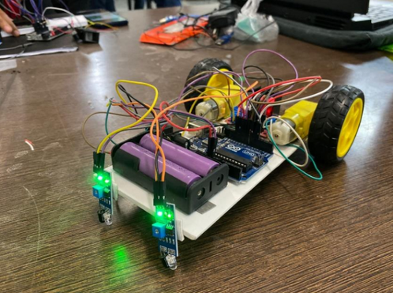

Projects

MedExplain AI
AI-Powered Medical Report & X-Ray Analysis · Ongoing
A full-stack healthcare platform that analyzes medical reports and chest X-rays using AI. It combines NLP-based report interpretation with a DenseNet121 computer vision model and Grad-CAM explainability to provide disease predictions, medical insights, and secure patient dashboards.

AI Credit Scoring & Loan Risk Analysis
Neuro-Fuzzy System
An AI-driven web-based fintech system that evaluates customer creditworthiness using a two-stage neuro-fuzzy model and predicts loan default risk using machine learning.
AI Content Moderation
Artificial Intelligence
An AI-powered content moderation system that analyzes text and images to identify harmful, unsafe, or inappropriate content in real time.

AI Complaint Management System
ML-Based Classification & Clustering
A machine learning-powered web app that analyzes student complaints, performs multilingual classification (English + Hinglish), and clusters similar issues to help institutions identify patterns efficiently.
Real-Time Kanban Board
WebSockets · Full Stack
A real-time collaborative Kanban board built using WebSockets, featuring live task sync across clients, drag-and-drop columns, task priorities, categories, and attachment support.
Employee Attrition Prediction
Machine Learning · Data Mining
A machine learning–based system that predicts employee attrition using HR analytics data, helping organizations identify high-risk employees and improve retention strategies.

Interactive Paint App
Frontend Project
A simple painting app built with HTML, CSS & JS. Draw, erase, fill and create shapes easily!

Cloud Portal App
Cloud Computing
A SaaS-based platform integrating Firebase and GCP. Features user authentication, file upload to Firebase Storage, and deployment on Google Cloud.
CPU Scheduling Algorithm
Frontend + Algorithm Project
Implemented various CPU scheduling algorithms (FCFS, SJF, Priority, Round Robin) using HTML, CSS, and JavaScript. Includes Gantt chart visualization.

Sticky Notes App
Software
Features include quick note saving, to-do lists, reminders, pinned notes, and timestamps for updates.
Weather App
Internship @ Prodigy Infotech
Designed using HTML, CSS, and JavaScript. Fully working weather application available on my GitHub.

Line Follower Robot
Feb–Mar 2024 · Hardware
A physics project using Arduino Uno to follow a black line path with precision.